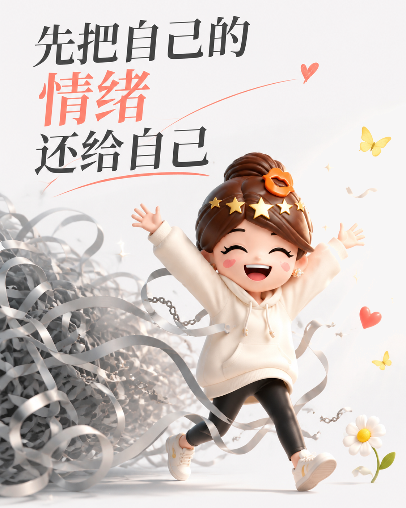
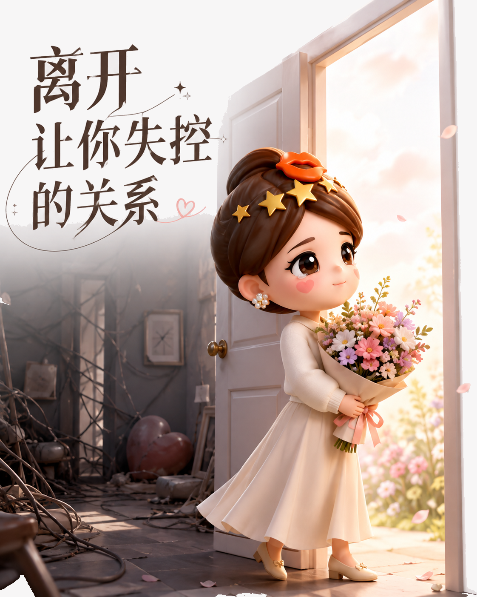

别让一段关系改写你的脾气
合适的关系让人松弛，而不是随时备战。
先辨认消耗
如果见完一个人总要反复复盘，情绪也从平静变成紧绷，问题未必在你。长期的否定、试探和纠缠，会占用耐心。

别把防备当性格
人在不安全的相处里，会学会解释、反击和留后手。久而久之，真诚被磨成锋利，连自己也不喜欢这样的状态。
把距离当作选择
筛选关系不是冷漠，也不是要求所有人都懂你。对反复拉低你、逼你失控的人，少解释，停纠缠，及时退出。留下让你平和的人。

合适的关系让人松弛，而不是随时备战。
如果见完一个人总要反复复盘，情绪也从平静变成紧绷，问题未必在你。长期的否定、试探和纠缠，会占用耐心。

人在不安全的相处里，会学会解释、反击和留后手。久而久之，真诚被磨成锋利，连自己也不喜欢这样的状态。
筛选关系不是冷漠，也不是要求所有人都懂你。对反复拉低你、逼你失控的人，少解释，停纠缠，及时退出。留下让你平和的人。
